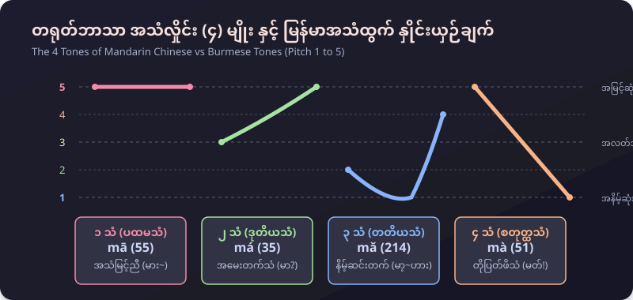
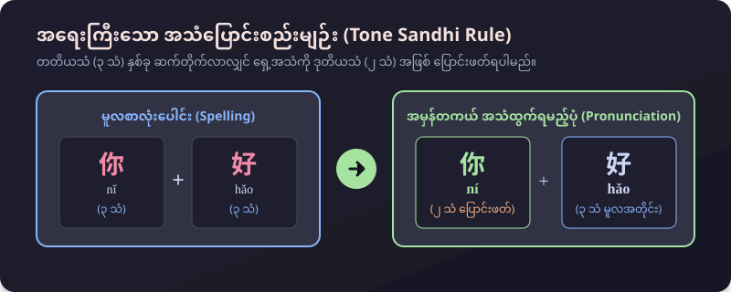

မြန်မာနိုင်ငံသားများအတွက် အခြေခံအကျဆုံး နှုတ်ဆက်စကားများနှင့် မဖြစ်မနေ သိထားသင့်သော တရုတ်ဘာသာစကား သဘောတရားများ
အောက်ပါ [🔊 နားထောင်မည်] ခလုတ်များကို နှိပ်ပါက စက်ရုပ်အသံမဟုတ်ဘဲ သဘာဝကျကျ အသံထွက်ပေးသော တရုတ်အသံသွင်း (Xiaoxiao & Yunxi Neural MP3) ဖြင့် တိုက်ရိုက် နားဆင်နိုင်ပါသည်။
မြန်မာဘာသာတွင် အသံနိမ့်၊ အသံမြင့်၊ သက်သံများ ရှိသကဲ့သို့ တရုတ်ဘာသာတွင်လည်း အဓိက အသံလှိုင်း ၄ မျိုးရှိပါသည်။

နေ့စဉ်လူမှုဘဝတွင် နှုတ်ဆက်ရာ၌ အသုံးအများဆုံး ဝါကျများ
အမျိုးသားဇာတ်ကောင် (David, Liu Jing) နှင့် အမျိုးသမီးဇာတ်ကောင် (Mary, Wang Lan) သီးသန့် အသံများဖြင့် လေ့ကျင့်နိုင်ပါသည်
တရုတ်စာနှင့် မြန်မာစာ ကွဲပြားချက်များနှင့် သတိထားရမည့် အချက်များ
တရုတ်စာတွင် ၃ သံ (တတိယသံ) နှလုံး ဆက်တိုက်လာပါက အသံထွက်ရ လွယ်ကူစေရန်အတွက် ရှေ့စာလုံးကို ၂ သံ (ဒုတိယသံ) သို့ ပြောင်း၍ အသံထွက်ရပါသည်။ စာလုံးပေါင်းရာတွင် ၃ သံ အတိုင်း ပေါင်းသော်လည်း ဖတ်သည့်အခါ ၂ သံ ပြောင်းဖတ်ရခြင်း ဖြစ်ပါသည်။

မြန်မာဘာသာတွင် "ကြိယာ (Verb)" သည် ဝါကျ၏ အဆုံး၌ လာလေ့ရှိသော်လည်း (ဥပမာ - ကျွန်တော် ထမင်း စားသည်)၊ တရုတ်ဘာသာတွင် ကြိယာသည် ကံ (Object) ၏ အရှေ့တွင် လာပါသည် (我 吃 饭)။
တရုတ်စာလုံးများသည် သဘာဝရုပ်ပုံများကို အခြေခံထားသော အစိတ်အပိုင်းငယ်များဖြင့် ပေါင်းစပ်ဖွဲ့စည်းထားခြင်း ဖြစ်သောကြောင့် အစိတ်အပိုင်းများကို သိရှိပါက အလွယ်တကူ မှတ်မိနိုင်ပါသည်။
အလွတ်ကျက်မှတ်ရမည့် အခြေခံ စကားလုံးများ
| # | တရုတ်စာလုံး | ဖျင်းယင်း | မြန်မာအသံထွက် | မြန်မာအဓိပ္ပာယ် | အသံ |
|---|---|---|---|---|---|
| 1 | 你 | nǐ | နီ | မင်း / ခင်ဗျား / နင် / ရှင် (You) | |
| 2 | 好 | hǎo | ဟောင် | ကောင်းသော / ကောင်းမွန်သည် (Good) | |
| 3 | 吗 | ma | မာ | ...လား / ပါသလား (အမေးစကားလုံး) | |
| 4 | 我 | wǒ | ဝေါ် | ကျွန်တော် / ကျွန်မ / ငါ (I, me) | |
| 5 | 很 | hěn | ဟန် | အရမ်း / အလွန် (Very) | |
| 6 | 也 | yě | ရယ် | လည်းပဲ (Also, too) | |
| 7 | 你们 | nǐmen | နီမန် | မင်းတို့ / ခင်ဗျားတို့ / နင်တို့ (You plural) | |
| 8 | 他们 | tāmen | ထာမန် | သူတို့ (They, them) | |
| 9 | 来 | lái | လိုင် | လာသည် (To come) | |
| 10 | 不 | bù | ပု / ပူ့ | မဟုတ် / မ...ဘူး (No, not) |